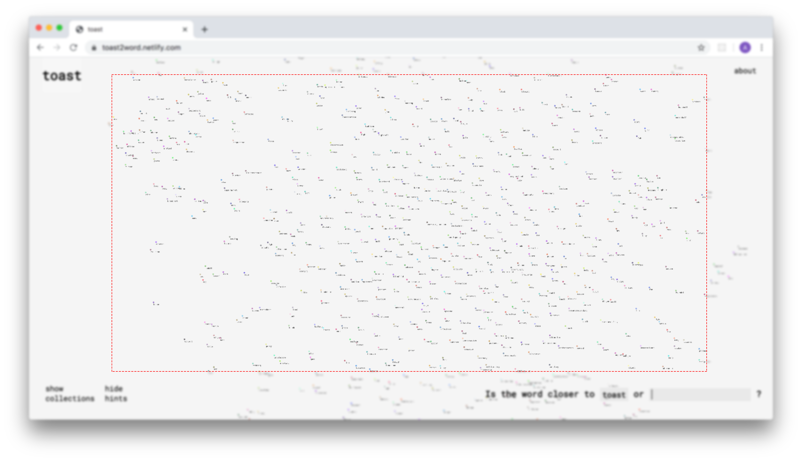
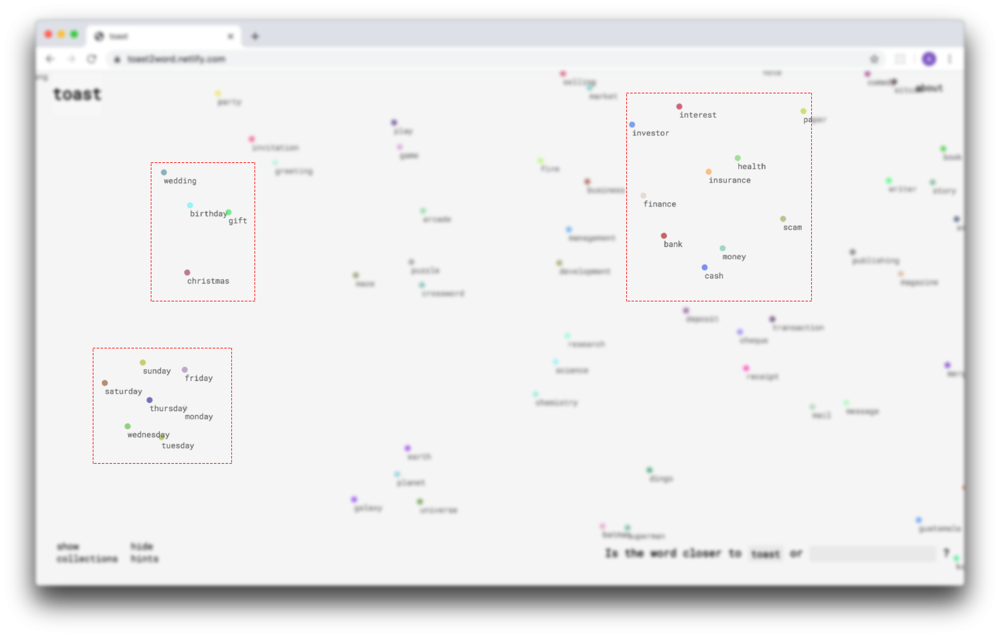
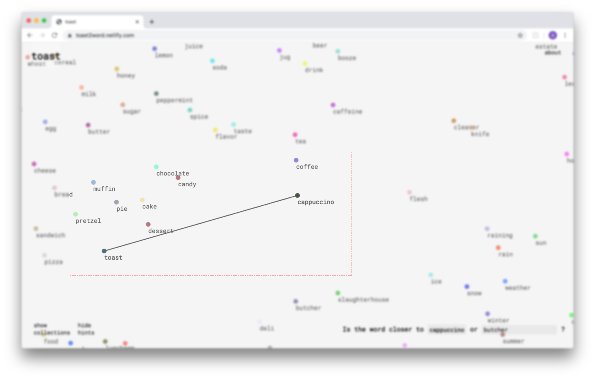
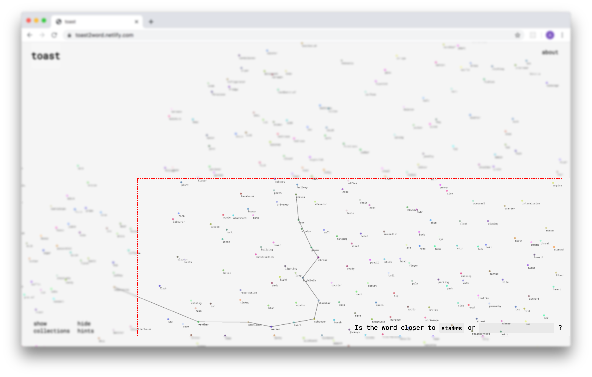
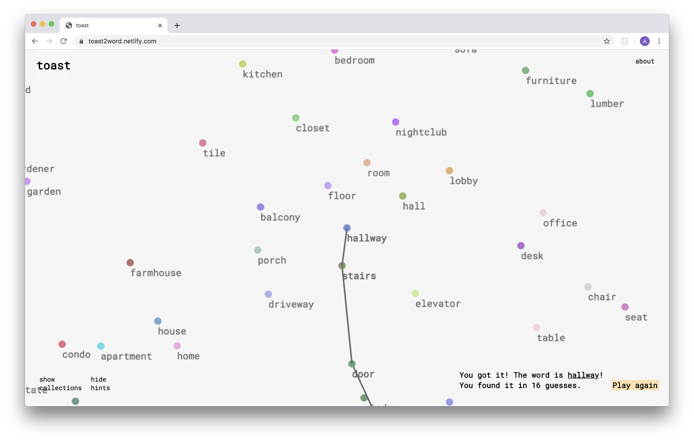
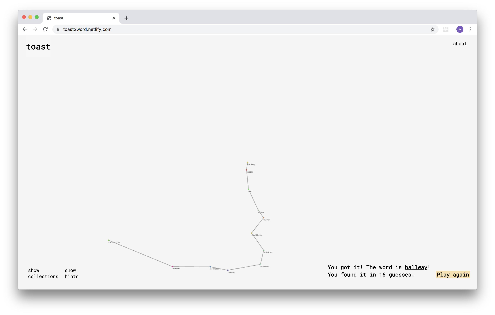

Toast2Word is a word-guessing game, played between a human and a computer program. Based on an older folk game, this machine learning-remake challenges human and machine to explore semantic space together: one using linguistic intuition, the other using vector math.
The setting of the game is a large cluster of words.
The cluster is arranged so that similar words are close together, and dissimilar words are far apart.

The program starts by choosing a secret word among the cluster.
The player must discover the secret word by asking a series of
"Is it closer to ___ or ___?" questions.
The
guessing always starts with toast, hence the name of the game.
Each guess has the potential to take the player one step closer to the secret word.
The guessing continues...
Until the secret word is found!
For the bold, the game is also playable without any visual hints...

Credits
Made in collaboration with Lan Zhang, with the goal of creating a
new way to explore data using machine learning.
Tools
The words were curated by us, processed with spaCy word2vec, plotted
with Sci-kitLearn t-SNE, and brought to the browser with pixi.js.
Links
Play:
toast2word.netlify.com
Read more:
github.com/lanzhang76/toast